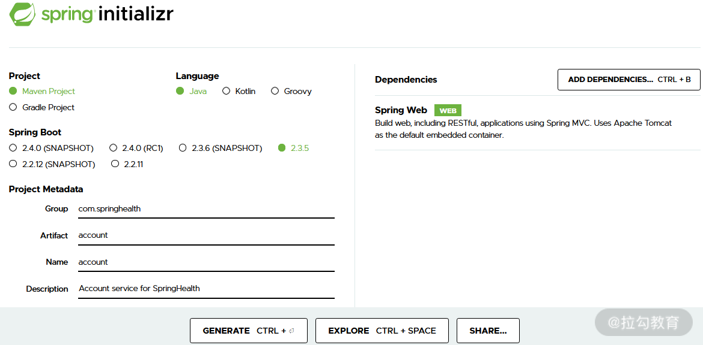
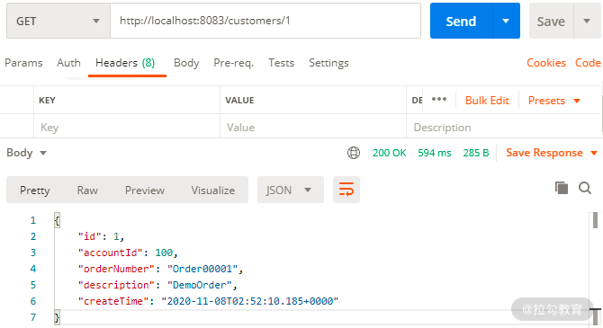
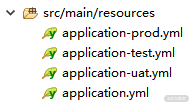

- 00 开篇词 从零开始：为什么要学习 Spring Boot？.md.html
- 01 家族生态：如何正确理解 Spring 家族的技术体系？.md.html
- 02 案例驱动：如何剖析一个 Spring Web 应用程序？.md.html
- 03 多维配置：如何使用 Spring Boot 中的配置体系？.md.html
- 04 定制配置：如何创建和管理自定义的配置信息？.md.html
- 05 自动配置：如何正确理解 Spring Boot 自动配置实现原理？.md.html
- 06 基础规范：如何理解 JDBC 关系型数据库访问规范？.md.html
- 07 数据访问：如何使用 JdbcTemplate 访问关系型数据库？.md.html
- 08 数据访问：如何剖析 JdbcTemplate 数据访问实现原理？.md.html
- 09 数据抽象：Spring Data 如何对数据访问过程进行统一抽象？.md.html
- 10 ORM 集成：如何使用 Spring Data JPA 访问关系型数据库？.md.html
- 11 服务发布：如何构建一个 RESTful 风格的 Web 服务？.md.html
- 12 服务调用：如何使用 RestTemplate 消费 RESTful 服务？.md.html
- 13 服务调用：如何正确理解 RestTemplate 远程调用实现原理？.md.html
- 14 消息驱动：如何使用 KafkaTemplate 集成 Kafka？.md.html
- 15 消息驱动：如何使用 JmsTemplate 集成 ActiveMQ？.md.html
- 16 消息驱动：如何使用 RabbitTemplate 集成 RabbitMQ？.md.html
- 17 安全架构：如何理解 Spring 安全体系的整体架构？.md.html
- 18 用户认证：如何基于 Spring Security 构建用户认证体系？.md.html
- 19 服务授权：如何基于 Spring Security 确保请求安全访问？.md.html
- 20 服务监控：如何使用 Actuator 组件实现系统监控？.md.html
- 21 指标定制：如何实现自定义度量指标和 Actuator 端点？.md.html
- 22 运行管理：如何使用 Admin Server 管理 Spring 应用程序？.md.html
- 23 数据测试：如何使用 Spring 测试数据访问层组件？.md.html
- 24 服务测试：如何使用 Spring 测试 Web 服务层组件？.md.html
- 结束语 以终为始：Spring Boot 总结和展望.md.html
03 多维配置：如何使用 Spring Boot 中的配置体系？
配置体系是基于 Spring Boot 框架开发应用程序的基础，而自动配置也是该框架的核心功能之一。今天我将带领大家梳理使用 Spring Boot 配置体系的系统方法。我们先从创建和运行第一个 Web 应用程序开始吧。
创建第一个 Spring Boot Web 应用程序
基于 Spring Boot 创建 Web 应用程序的方法有很多，但最简单、最直接的方法是使用 Spring 官方提供的 Spring Initializer 初始化模板。
初始化使用操作：直接访问 Spring Initializer 网站（http://start.spring.io/），选择创建一个 Maven 项目并指定相应的 Group 和 Artifact，然后在添加的依赖中选择 Spring Web，点击生成即可。界面效果下图所示：

使用 Spring Initializer 创建 Web 应用程序示意图
当然，对于有一定开发经验的同学而言，我们完全可以基于 Maven 本身的功能特性和结构，来生成上图中的代码工程。
接下来，我们参考 02 讲中关于 Controller 的创建基本方法，来为这个代码工程添加一些支持 RESTful 风格的 HTTP 端点，在这里我们同样创建一个 CustomerController 类，如下所示：
@RestController
@RequestMapping(value="customers")
public class CustomerController {
@RequestMapping(value = "/{id}", method = RequestMethod.GET)
public CustomerTicket getCustomerTicketById(@PathVariable Long id) {
CustomerTicket customerTicket = new CustomerTicket();
customerTicket.setId(1L);
customerTicket.setAccountId(100L);
customerTicket.setOrderNumber("Order00001");
customerTicket.setDescription("DemoOrder");
customerTicket.setCreateTime(new Date());
return customerTicket;
}
}
请注意，这里是为了演示方便，我们才使用了硬编码完成了一个 HTTP GET 请求的响应处理。
现在 RESTful 端点已经开发完成，我们需要对这个应用程序进行打包。基于 Spring Boot 和 Maven，当我们使用 mvn package 命令构建整个应用程序时，将得到一个 customerservice-0.0.1-SNAPSHOT.jar 文件，而这个 jar 文件就是可以直接运行的可执行文件，内置了 Tomcat Web 服务器。也就是说，我们可以通过如下命令直接运行这个 Spring Boot 应用程序：
java –jar customerservice-0.0.1-SNAPSHOT.jar
那么，如何验证服务是否启动成功，以及 HTTP 请求是否得到正确响应呢？在 03 讲中，我们引入 Postman 来演示如何通过 HTTP 协议暴露的端点进行远程服务访问。
Postman 提供了强大的 Web API 和 HTTP 请求调试功能，界面简洁明晰，操作也比较方便快捷和人性化。Postman 能够发送任何类型的 HTTP 请求（如 GET、HEAD、POST、PUT 等），并能附带任何数量的参数和 HTTP 请求头（Header）。
这时我们通过 Postman 访问“http://localhost:8083/customers/1”端点，可以得到如下图所示的HTTP响应结果，说明整个服务已经启动成功。

好了，现在我们已经明白如何构建、打包以及运行一个简单的 Web 应用程序了，这是一切开发工作的起点，后续所有的案例代码我们都将通过这种方式展现在你面前，包括接下来要介绍的 Spring Boot 配置体系也是一样。
Spring Boot 中的配置体系
在 Spring Boot 中，其核心设计理念是对配置信息的管理采用约定优于配置。在这一理念下，则意味着开发人员所需要设置的配置信息数量比使用传统 Spring 框架时还大大减少。当然，今天我们关注的主要是如何理解并使用 Spring Boot 中的配置信息组织方式，这里就需要引出一个核心的概念，即 Profile。
配置文件与 Profile
Profile 本质上代表一种用于组织配置信息的维度，在不同场景下可以代表不同的含义。例如，如果 Profile 代表的是一种状态，我们可以使用 open、halfopen、close 等值来分别代表全开、半开和关闭等。再比如系统需要设置一系列的模板，每个模板中保存着一系列配置项，那么也可以针对这些模板分别创建 Profile。这里的状态或模版的定义完全由开发人员自主设计，我们可以根据需要自定义各种 Profile，这就是 Profile 的基本含义。
另一方面，为了达到集中化管理的目的，Spring Boot 对配置文件的命名也做了一定的约定，分别使用 label 和 profile 概念来指定配置信息的版本以及运行环境，其中 label 表示配置版本控制信息，而 profile 则用来指定该配置文件所对应的环境。在 Spring Boot 中，配置文件同时支持 .properties 和 .yml 两种文件格式，结合 label 和 profile 概念，如下所示的配置文件命名都是常见和合法的：
/{application}.yml
/{application}-{profile}.yml
/{label}/{application}-{profile}.yml
/{application}-{profile}.properties
/{label}/{application}-{profile}.properties
Yaml 的语法和其他高级语言类似，并且可以非常直观地表达各种列表、清单、标量等数据形态，特别适合用来表达或编辑数据结构和各种配置文件。在这里，我们指定了如下所示的数据源配置，这里使用了 . yml 文件，如下所示：
spring:
datasource:
driver-class-name: com.mysql.cj.jdbc.Driver
url: jdbc:mysql://127.0.0.1:3306/account
username: root
password: root
如果采用 .propertie 配置文件，那么上述配置信息将表示为如下的形式：
spring.datasource.driverClassName=com.mysql.cj.jdbc.Driver
spring.datasource.url=jdbc:mysql://127.0.0.1:3306/account
spring.datasource.username=root
spring.datasource.password=root
显然，类似这样的数据源通常会根据环境的不同而存在很多套配置。假设我们存在如下所示的配置文件集合：

多配置文件示意图
注意，这里有一个全局的 application.yml 配置文件以及多个局部的 profile 配置文件。那么，如何指定当前所使用的那一套配置信息呢？在 Spring Boot 中，我们可以在主 application.properties 中使用如下的配置方式来激活当前所使用的 Profile：
spring.profiles.active = test
上述配置项意味着系统当前会读取 application-test.yml 配置文件中的配置内容。同样，如果使用 .yml 文件，则可以使用如下所示的配置方法：
spring:
profiles:
active: test
事实上，我们也可以同时激活几个 Profile，这完全取决于你对系统配置的需求和维度：
spring.profiles.active: prod, myprofile1, myprofile2
当然，如果你想把所有的 Profile 配置信息只保存在一个文件中而不是分散在多个配置文件中， Spring Boot 也是支持的，需要做的事情只是对这些信息按 Profile 进行组织、分段，如下所示：
spring:
profiles: test
#test 环境相关配置信息
spring:
profiles: prod
#prod 环境相关配置信息
尽管上述方法是有效的，但在 03 讲中，还是推荐你按多个配置文件的组织方法管理各个 Profile 配置信息，这样才不容易混淆和出错。
最后，如果我们不希望在全局配置文件中指定所需要激活的 Profile，而是想把这个过程延迟到运行这个服务时，那么我们可以直接在 java –jar 命令中添加“--spring.profiles.active”参数，如下所示：
java –jar customerservice-0.0.1-SNAPSHOT.jar --spring.profiles.active=prod
这种实现方案在通过脚本进行自动化打包和部署的场景下非常有用。
代码控制与Profile
在 Spring Boot 中，Profile 这一概念的应用场景还包括动态控制代码执行流程。为此，我们需要使用 @Profile 注解，先来看一个简单的示例。
@Configuration
public class DataSourceConfig {
@Bean
@Profile("dev")
public DataSource devDataSource() {
//创建 dev 环境下的 DataSource
}
@Bean()
@Profile("prod")
public DataSource prodDataSource(){
//创建 prod 环境下的 DataSource
}
}
可以看到，我们构建了一个 DataSourceConfig 配置类来专门管理各个环境所需的 DataSource。注意到这里使用 @Profile 注解来指定具体所需要执行的 DataSource 创建代码，通过这种方式，可以达到与使用配置文件相同的效果。
更进一步，能够在代码中控制 JavaBean 的创建过程为我们根据各种条件动态执行代码流程提供了更大的可能性。例如，在日常开发过程中，一个常见的需求是根据不同的运行环境初始化数据，常见的做法是独立执行一段代码或脚本。基于 @Profile 注解，我们就可以将这一过程包含在代码中并做到自动化，如下所示：
@Profile("dev")
@Configuration
public class DevDataInitConfig {
@Bean
public CommandLineRunner dataInit() {
return new CommandLineRunner() {
@Override
public void run(String... args) throws Exception {
//执行 Dev 环境的数据初始化
};
}
这里用到了 Spring Boot 所提供了启动时任务接口 CommandLineRunner，实现了该接口的代码会在 Spring Boot 应用程序启动时自动进行执行，我们会在后续的课程中看到这个接口的具体使用方法。
@Profile 注解的应用范围很广，我们可以将它添加到包含 @Configuration 和 @Component 注解的类及其方法，也就是说可以延伸到继承了 @Component 注解的 @Service、@Controller、@Repository 等各种注解中。
常见配置场景和内容
在今天课程的最后，我们给出几个常见的配置示例来帮助你进一步加深对 Spring Boot 中配置体系的理解。
对于一个 Web 应用程序而言，最常见的配置可能就是指定服务暴露的端口地址，如下所示：
server:
port: 8080
同时，数据库访问也是 Web 应用程序的基本功能，因此，关于数据源的设置也是常见的一种配置场景，我们在 02 讲中创建第一个 Spring Boot Web 应用程序时给出了一个基本的示例。这里再以 JPA 为例，给出如下所示的一种配置方案：
spring:
jpa:
hibernate:
ddl-auto: create
show-sql: true
显然，这里使用了 Hibernate 作为 JPA 规范的实现框架，并设置了 show-sql 等相关属性。然后，开发人员一般也需要设置日志级别和对象，如下所示的就是一个典型的配置示例：
logging.level.root=WARN
logging.level.com.springcss.customer=INFO
我们设置了系统的全局日志级别为 WARN，而针对自定义的 com.springcss.customer 包下的日志则将其级别调整到 INFO。
随时本课程内容的展开，这些常见的配置信息都会在我们的 SpringCSS 案例分析中得到展示。这里需要注意的是，Spring Boot 基于 application.properties 或 application.yml 全局配置文件已经自动内置了很多默认配置。即使我们不设置上述配置内容，Spring Boot 仍然可以基于这些默认配置完成系统的初始化。自动配置是 Spring Boot 中的一个核心概念，我们会在后续内容中给出详细的实现原理分析。
小结与预告
配置体系是学习 Spring Boot 应用程序的基础。在今天的课程中，我们系统梳理了 Spring Boot 中的 Profile 概念，以及如何通过配置文件和代码控制的方式来使用这一核心概念。